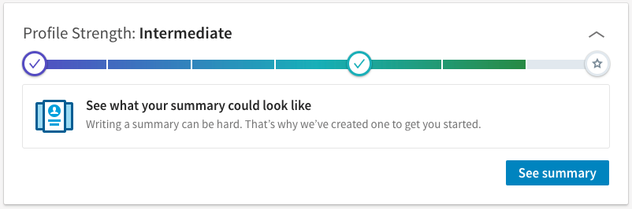
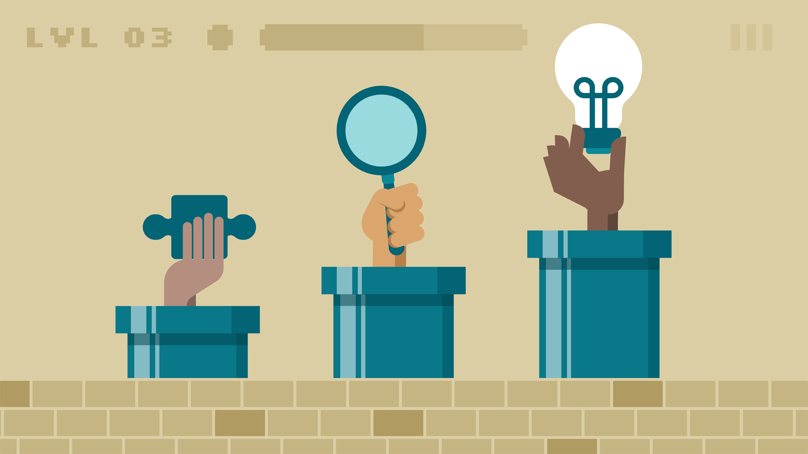
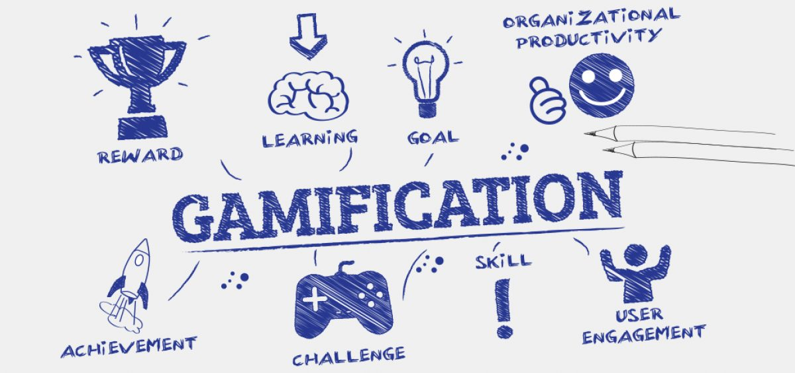
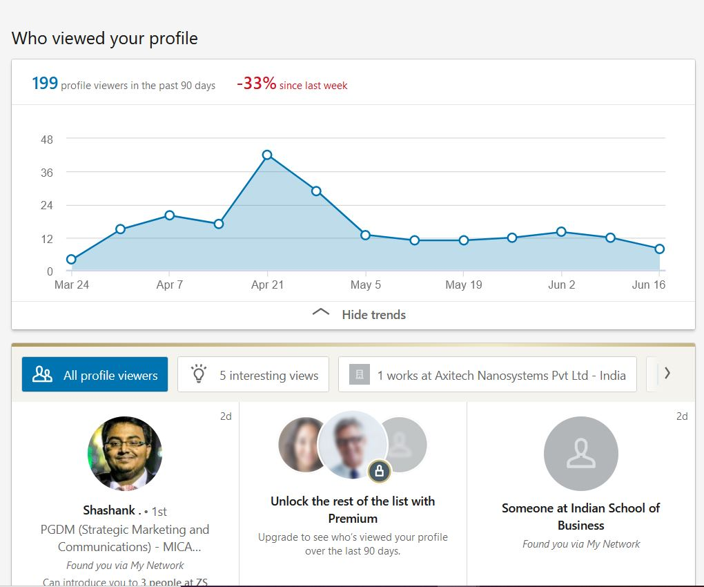

- Favourite App
- Favourite thing about Linkedin
Before joining an MBA college. I had never given attention to building a professional network. But being part of MICA made me realize the importance of it and LinkedIn became my go-to app. And as it is said Familiarity breeds liking, I started not only liking but loving the app.
It was the first thing I opened on my phone in morning and the last app to close before sleeping as I realized that it not only helps me in building the professional network rather the articles and posts on it gives me different perspective and view points of people around me.
So gradually it became a place where I went to observe and derive insights. It became a learning platform for me.

How do you turn a serious and detail oriented task into a fun and interesting one?
By Gamifying it !!! And linkedIn has mastered that art. From the progress bar to the view features, everything you do once signed up has Gamification written all over it. Basically, Gamification techniques are intended to leverage people’s natural desires for socializing, learning, mastery, competition, achievement, status, self-expression, altruism or closure. So let’s tak about how LinkedIn leverages it

Views
Along with showing number of people who has viewed your profile. It shows who have been the last person to see the profile. This not only stimulates the motivator of being the “center of attention”, but also encourages clicking on the profile of those people to potentially connect with them. Thus increasing their network


Progress Bar
To make this network of professionals valuable, as much as for LinkedIn as for its users, the information from each member is required. The more information is provided by the user the greater the benefit which the network gets overall. When a new user signs in, tend to provide only the minimum information, usually doubting about how much information should provide, this apparently due mainly to distrust about sharing personal data, lack of time or laziness from network users.
LinkedIn, using gamification and UX (User Experience) elements, implemented a progress bar that appealed to the “sense of finishing something incomplete” to gently suggest and motivate to achieve a better percentage and thus obtain more information from the user, using a strategy where the percentage increase was easy to obtain at the beginning, but gradually it required more effort to reach 100% which added a touch of fun and challenge that invited to provide more data.

If I am honest with you, the idea on which LinkedIn was built can be boring. But it tackled that by gamifying it. The mechanics of LinkedIn gamification works on the inherent principle of human psychology that works on call to action.
I think this is one of the best feature of LinkedIn as the game mechanics of LinkedIn has played a pivotal role in positioning itself as the leader in Professional Social Networking